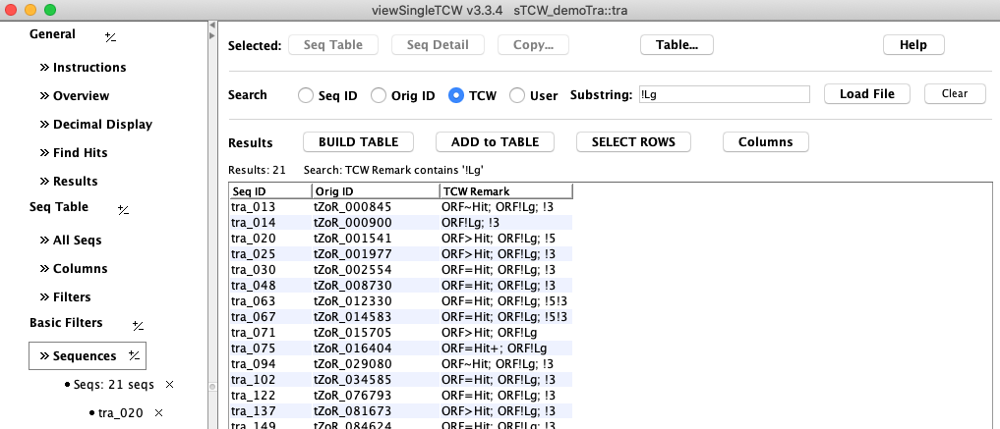
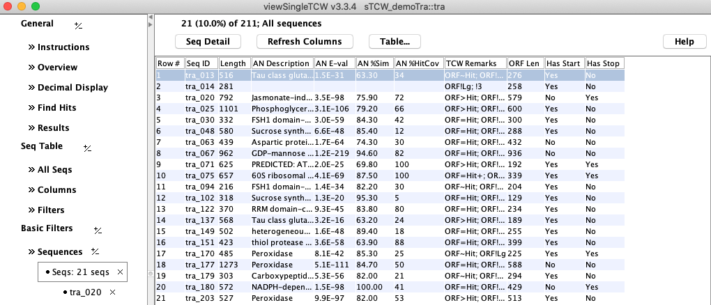
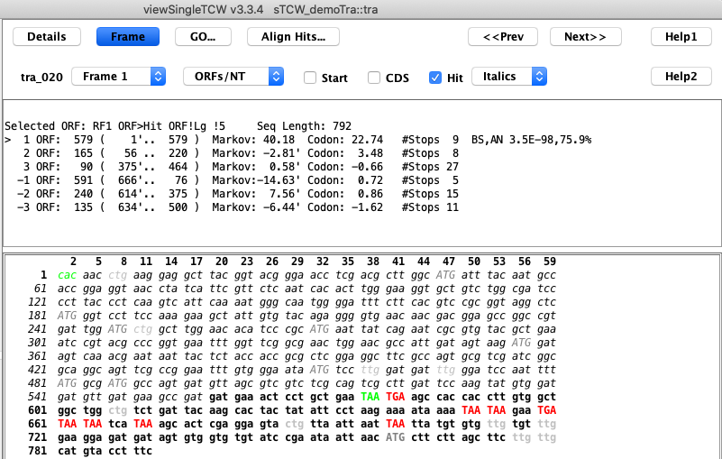

This document discusses the TCW ORF finder.
Contents:
- Overview
- runSingleTCW - Running the ORF finder
- ORF finder algorithm
- Running from the ORF finder only
- Output file
- viewSingleTCW - Viewing the ORFs
- TCW ORF finder and Trinity Transcoder
- Explanation of summary output
- References
Overview
TCW has programs to build and view a single species (singleTCW), and to build and view
the orthologs of multiple species (multiTCW). For the comparison, it is necessary to have
the protein sequences, i.e. translated Open Reading Frame (ORF).
The TCW annotation step computes the best ORF for each sequence using the annotation hits,
5th-order Markov model2,3 and length of candidate ORF. It outputs a protein sequence for
every transcript.
NOTE: there have been some small changes to the algorithm since this document was written,
but its the parameters have stayed the same.
runSingleTCW - Running the ORF finder
|
runSingleTCW has an Option menu that allows the user to
set the GO, ORF and similarity options for annotations. The section on the right
are the parameters for ORF finding. The algorithm and parameters are discussed in the next section.
This ORF finder algorithm was designed to find the 'best' ORF from de novo assembled
transcripts for input into runMultiTCW. However, a file of all the 'good' ORFs is output
(see Output files).
|

Figure 1: The runSingleTCW ORF finder options.
|
Algorithm
The algorithm is:
1. For each of the 6 frames:
Find the best ORF as follows:
If the frame computes an ORF using Rule 1, no further ORFs are found.
Otherwise, find all possible ORFs and select the best using Rule 2 and Rule 3.
2. From the 6 ORFs found in Step 1, find the best ORF using Rules 1, 2 and 3.
Rule 1: Use best hit frame if E-value < [default 1E-03] or %HitSim>=[default 95].
If this rule succeeds, see Additional heuristics for information on assigning coordinates.
If Diamond is used as the search program, 1E-03 is its default and generally gets the short
perfect matches; however, with more stringent E-value cutoffs, the perfect hits to a transcript with relatively
long UTRs can be missed, so the %HitSim (%hit-coverage >=N and %similarity >=N) detects these cases.
Rule 2: Else use the longest ORF frame if the log length ratio > [default 0.3].
|
If the lengths of two candidate ORFs are very different, than it is best to
use the longest ORF. To determine if their lengths are 'very' different,
the log length ratio is used. For example:
In Table 1 on the right, the 0.1, 0.2 and 0.3 are Log Length Ratio cutoffs.
A value of 'false' indicates that the longest ORF will be selected.
A value of 'true' indicates that Rule 3 will be used.
|
Table 1. Length differences
| Length | Length | Log | Cutoff
| | 1 | 2 | Ratio | 0.1 | 0.2 | 0.3
| | 39 | 30 | 0.262 | false | false | true
| | 390 | 300 | 0.262 | false | false | true
| | 3900 | 3000 | 0.262 | false | false | true
|
|
Rule 3: Else use the best Markov score.
Markov is the 5th-order Markov model as computed by TransDecoder3 and
originally used in GeneID2. It is trained using either of the following:
- Train with Best Hits (i.e. pass Rule 1). Minimum Set [default 50]
There must be at least Minimum Set sequences that pass the E-value
cutoff or no training set is created.
The training set is created from the exact nucleotide regions of hit alignments.
- Train with CDS file [default none]
The file name of a fasta file of nucleotide coding sequences.
Note: Its rare to use Rule 3 since generally a sequence has a good hit or a sufficiently long
ORF. However, the scores are interesting to view in viewSingleTCW, where the
codon usage score is also shown (trained with the same set).
Additional heuristics: These rules were developed by studying the results.
An ORF must be greater than 30bp unless the sequence length is less than 30bp, then it must
be at least 9bps.
Heuristics for Rule 1:
- The 'Best Eval' hit is used for this rule, except in the following two cases:
- The hit is from a nucleotide annoDB (i.e. annotation database).
- The hit region contains Stop codons.
In these cases, the 'Best Annotation' hit is used if it does not have these problems.
- The hit frame will be ignored in the following two conditions:
- If there are Stop codons within the hit region.
- If a sequence has hits to multiple frame and the best hit covers less than 50% of the protein.
- If the hit frame is used, the coordinates are set as follows:
- If the hit E-value<1E-100 and the hit coverage is >95%:
- Search for the first Start and Stop codons within
the first 40 upstream and downstream codons, respectively.
- If no start is found, the search will look internally at the first 10 codons.
- If no Start is found, the hit start coordinate
will be used, and if no Stop is found, the hit end coordinate will be used.
- Otherwise, search to the ends for the first Start and Stop codons.
- In either case, the extension will not pass through a string of >=9 consecutive N's.
Running the ORF finder only
The ORF finder is run after the sequences are annotated (Exec Annotate Sequences in runSingleTCW).
If you want to change the ORF finder options and run it again, there is a "Exec ORF only" function
in runSingleTCW. Or you can run it from the command line:
./execAnno <project> -r
This will uses the option set using runSingleTCW.
Output files
The following files are written into the project's subdirectory "orfFiles".
The following examples are from the demoTra demo files.
Table 2. Output files of the TCW ORF finder with demoTra replaced
with the database name.
| bestORFs.pep.fa | The translated CDS for the best ORF for each sequence.
|
| bestORFs.cds.fa | The CDS for the best ORF for each sequence.
|
| allGoodORFs.pep.fa | The translated CDSs for all good ORFs*.
|
| allGoodORFs.scores.txt | A list of the coordinates and scores for all good ORFs*.
|
| bestORF.scores.txt | For the best ORF for each sequence, the 6-frame scores for the ORF.
|
| scoreCodon.txt | The computed codon usage frequencies.
|
| scoreMarkov.txt | The computed 5th-order Markov model loglikelihood.
|
* Selected hit, or >= 900nt, or Markov score is >0 and best frame.
Example of AllGoodORFs.txt, where the first one listed is the selected ORF.
### Name ntLen aaLen Type Frame Start..Stop Markov Codon Remark
tra_001_a 564 188 5p-partial 1 106..669 46.91 35.83 $ORF>Hit Hit: 2E-85 88% 79% (106..663)
tra_002_a 2160 720 5p-partial 3 3..2162 140.08 68.49 $ORF>Hit Hit: 3E-181 53% 82% (6..2150)
tra_002_b 198 66 Complete -3 2272..2075 4.12 4.26
Example of BestORFscores.txt of the 6-frame scores for the best ORF:
>tra_002 type:5p-partial seqLen:3111 orfLen:2160 frame:3 coords:3..2162 Hit:3.3E-181,53%,82%
Markov 140.44 -64.85 -27.51 -55.59 -25.99 -26.71 3
The first Markov score is for the ORF starting at 0 (hence, the current frame),
the next two are offset by 1 and 2 respectively, the last
three are for the reverse sequence with offsets 0,1,2.
The TCW ORF finder assigns remarks to the sequence about the selected ORF;
all TCW assigned remarks start with a "$". In the
images below, an ORF assigned remark is searched on in A, viewed as a column in B, and shown in the sequence frame view of C.
A. Basic Sequence Query for Remark

|
B. Columns of the Sequence table

|
|
C. Sequence Details Frame view

|
D. 6-frame scores for the displayed ORF
|
|
Figure 3: viewSingleTCW features for viewing the ORFs.
A. Basic Sequence Query for Remark: The Basic Sequence Query allows searching on the remark, in
this example, the remark "!LG" was searched on (substring of remark $ORF!LG), which shows the sequences
where the ORF is not the longest.
All rows were selected and "View Sequences" shows them in the main Sequence table as shown in Figure 3B.
B. Columns of the Sequence table: This figure
shows most of the ORF columns. A row can be selected followed by
"View Selected Sequence" to view the frame as shown in Figure 3C.
C. Sequence Details Frame view: This example shows that the longest ORF was not the
selected one. The selected one has a hit with an E-value of 3E-44 and good Markov and Codon
scores.
D. By toggling the "ORFs" to "Scores", the upper region will show the 6-frame scores of the selected ORF.
The TCW ORF finder prints out various summary counts. The results below are from a RNA-seq assembled
dataset of 31,925 sequences.
Is Longest ORF 24,187 (76%) ORF>=300 20,460 (64%) MultiFrame 1,233 (4%)
Has Hit 22,793 (71%) Has Start&Stop 16,002 (50%) >=9 Ns in ORF 0 (0%)
Markov Best Score 24,346 (76%) Has Start|Stop 28,669 (90%) Stops in Best Eval 1,175 (4%)
All of the above 16,859 (53%) Average ORF len 755
| The Markov and Codon Best Frame score is one that is positive and greater than all other frames for the ORF.
Though the Codon percentage is sometimes better than the Markov, the Markov score is much more discriminatory.
For example, when the ORF finder was executed with a file of UTRs as input, the table on the right show the
difference.
|
Table 3: Training with CDS vs UTRs
| Input | Markov | Codon
| | Hit Regions | 17783 (85%) | 19518 (93%)
| | UTRs | 5832 (28%) | 13370 (64%)
|
|
TCW ORF finder and Trinity TransDecoder
The TransDecoder2 Perl code for computing the reading frame specific
5th-order Markov model was written in
Java for the TCW ORF finder, that is, it computes the exact same scores.
- If the TCW file HitRegion.txt
was entered into the TransDecoder seq_n_baseprobs_to_loglikelihood_vals.pl program,
the TCW ScoreMarkov.txt file will be the same as the TransDecoder hexamer.scores file.
- If the bestORFs.cds.fa file is used as input to the score_CDS_likelihood_all_6_frames.pl
program, the TCW bestORFs.scores.txt file will have similar Markov score as the
longest_orfs.cds.scores file; there is a slight variation because of a difference in precision between
Perl and Java.
- GeneID: Parra G, Blanco E, Guigo R (2000) GeneID in Drosophilia. Genome Research 10:511-515.
- TransDecoder: Hass BJ, Papanicolaou A, Yassour M. et al. (2013) De novo transcript sequence
reconstruction from RNA-seq using the Trinity platform for reference generation and analysis. Nature Protocols 8:1494-1512
- Search programs used in TCW:
- BLAST: Altschul SF, Madden TL, Schaffer AA, Zhang J, Zhang Z, et al. (1997) Gapped BLAST and PSI-BLAST: a new generation of protein database search programs. Nucleic Acids Res 25: 3389-3402.
- DIAMOND: Benjamin Buchfink, Chao Xie & Daniel H. Huson, Fast and Sensitive Protein Alignment using DIAMOND, Nature Methods, 12, 59-60 (2015) doi:10.1038/nmeth.3176.
{kind=link}
{kind=link}
{kind=link}
{kind=link}